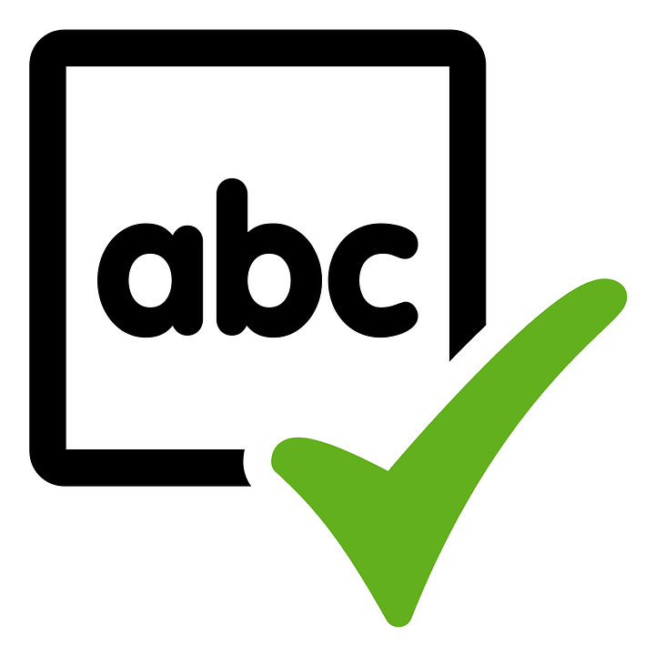

Array Traversals
Both indexed for loops and enhanced for loops can be used to traverse (遍历) an array of objects.
The source example uses a Student class and a StudentArray class that searches for a student with a specific name.
When multiple classes are used on Runestone, only the class with main should be public; the other classes start with class instead of public class.
activecode:: student-arrayRun the StudentArray class.
It uses the class Student below it and creates an array of Student objects.
Using the StudentArray print() method as a guide, write a StudentArray method called findAndPrint() which takes a String name as an argument.
Use an enhanced for loop to traverse the array and find a Student with the same name.
public class StudentArray
{
private Student[] array;
private int size = 3;
// Creates an array of the default size
public StudentArray()
{
array = new Student[size];
}
// Creates an array of the given size
public StudentArray(int size)
{
array = new Student[size];
}
// Adds Student s to the array at index i
public void add(int i, Student s)
{
array[i] = s;
}
// prints the array of students
public void print()
{
for (Student s : array)
{
// this will call Student's toString() method
System.out.println(s);
}
}
/* Write a findAndPrint(name) method */
public static void main(String[] args)
{
// Create an object of this class and pass in size 3
StudentArray roster = new StudentArray(3);
// Add new Student objects at indices 0-2
roster.add(0, new Student("Skyler", "skyler@sky.com", 123456));
roster.add(1, new Student("Ayanna", "ayanna@gmail.com", 789012));
roster.add(2, new Student("Dakota", "dak@gmail.com", 112233));
roster.print();
System.out.println("Finding student Ayanna: ");
// uncomment to test
// roster.findAndPrint("Ayanna");
}
}class Student
{
private String name;
private String email;
private int id;
public Student(String initName, String initEmail, int initId)
{
name = initName;
email = initEmail;
id = initId;
}
public String getName()
{
return name;
}
public String getEmail()
{
return email;
}
public int getId()
{
return id;
}
// toString() method
public String toString()
{
return id + ": " + name + ", " + email;
}
}The unit tests check that student code includes:
findAndPrint(String method headerroster.findAndPrint(for loop over Student objects inside findAndPrint.equals(.getName()Normally an enhanced for loop cannot be used to modify primitive values in an array because the loop variable does not refer to the real object in the array.
When an array stores object references, the attributes can be modified by calling methods on the enhanced for loop variable.
The references stored in the array are unchanged, but the loop variable is another reference to the same objects.

Spell Checker
In this challenge, you will use an array of English words from a dictionary file to see if a given word is spelled correctly.
The source encourages working in pairs.
The challenge includes a dictionary file of 10,000 English words which is read into the array dictionary for you.
print10 method that prints out the first 10 words of the dictionary array. Do not print out the whole array of 10,000 words.spellcheck method that takes a word as a parameter and returns true if it is in the dictionary array. It should return false if it is not found.printStartsWith(String) that prints out the words that start with a String of letters in the dictionary array. This is not autograded.The spellcheck algorithm is called a linear search (线性搜索): step through the array one element at a time looking for a certain element.
import java.io.*;
import java.nio.file.*;
import java.util.*;
public class SpellChecker
{
// This dictionary has 10,000 English words read in from a dictionary file in
// the constructor
private String[] dictionary = new String[10000];
/* 1. Write a print10() method that prints out the first
* 10 words of the dictionary array. Do not print out the whole array!
*/
/* 2. Write a spellcheck() method that takes a word as a
* parameter and returns true if it is in the dictionary array.
* Return false if it is not found.
*/
// Do not change "throws IOException" which is needed for reading in the input
// file
public static void main(String[] args) throws IOException
{
SpellChecker checker = new SpellChecker();
// Uncomment to test Part 1
// checker.print10();
/* // Uncomment to test Part 2
String word = "catz";
if (checker.spellcheck(word) == true)
{
System.out.println(word + " is spelled correctly!");
}
else
{
System.out.println(word + " is misspelled!");
}
word = "cat";
System.out.println(word + " is spelled correctly? " + checker.spellcheck(word));
*/
// 3. optional and not autograded
// checker.printStartsWith("b");
} // The constructor reads in the dictionary from a file
public SpellChecker() throws IOException
{
// Let's use java.nio method readAllLines and convert to an array!
List<String> lines = Files.readAllLines(Paths.get("dictionary.txt"));
dictionary = lines.toArray(dictionary);
/* The old java.io.* Scan/File method of reading in files, replaced by java.nio above
// create File object
File dictionaryFile = new File("dictionary.txt");
//Create Scanner object to read File
Scanner scan = new Scanner(dictionaryFile);
// Reading each line of the file
// and saving it in the array
int i = 0;
while(scan.hasNextLine())
{
String line = scan.nextLine();
dictionary[i] = line;
i++;
}
scan.close();
*/
}
}dictionary.txt and Runestone checksThe source uses dictionary.txt from dictionary10K.txt.
The tests check:
checker.print10(); is uncommented in mainprint10() prints a aa aaa aaron ab abandoned abc aberdeen abilities ability, one word per linespellcheck("dogz") returns falsespellcheck("dog") returns true.equals(In the last lesson, you came up with a class of your own choice relevant to you or your community.
In the last lesson, you created an array to hold objects of your class.
Copy your array of objects code from the last lesson.
In this challenge, add a loop to traverse your array to print out each object.
public class // Add your class name here!
{
// Copy your class from lesson 4.3 below.
public static void main(String[] args)
{
// Create an array of 3 objects of your class.
// Initialize array elements 0-2 to new objects of your class.
// Write a for loop that traverses the array and calls
// the print method of each object in the array
}
}Student code should:
3for loop.print in the loopmainfor loops for object-array traversals.getName().equals(name) or equivalent object comparison in findAndPrintprint10() without printing all 10,000 dictionary wordsfalse only after the whole dictionary has been searchedNext: implementing array algorithms.